here is a list of Train operating compinies offten called TOCs
For former operators see
|
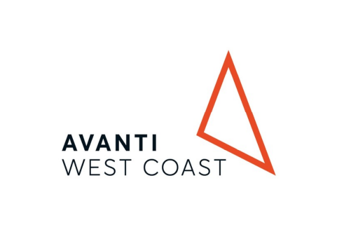 Avanti West Coast |
c2c |
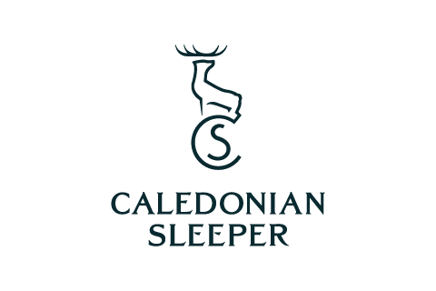 Caledonian Sleeper |
|
Chiltern Railways |
CrossCountry |
East Midlands Railway |
|
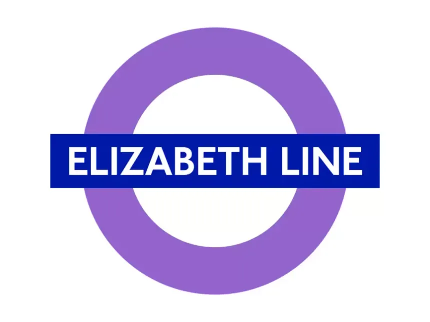 Elizabeth line (formaly TFL Rail) |
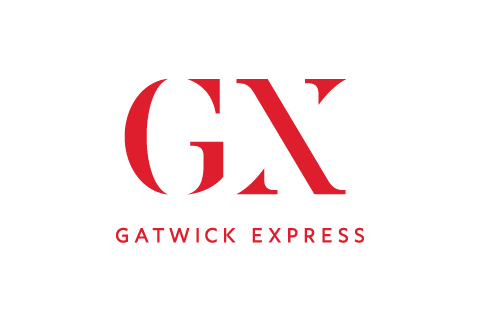 Gatwick Express |
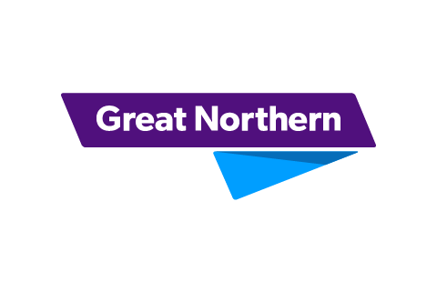 Great Northern |
|
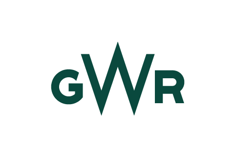 Great Western Railway |
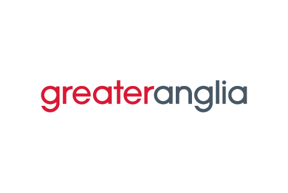 Greater Anglia |
Heathrow Express |
|
Hull Trains |
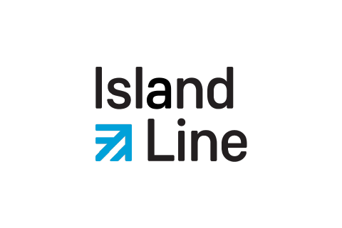 Island Line |
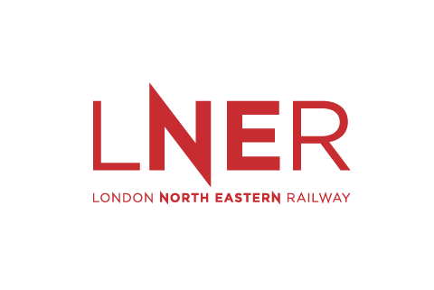 London North Eastern Railway |
|
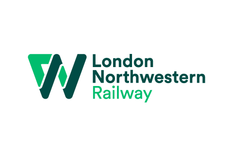 London Northwestern Railway |
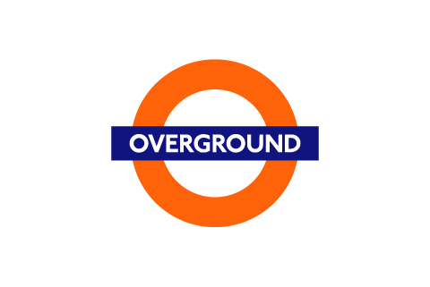 London Overground |
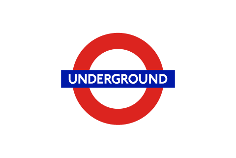 London Underground |
|
Lumo |
Merseyrail |
Northern |
|
ScotRail |
Southeastern |
South Western Railway |
|
Southern |
Stansted Express |
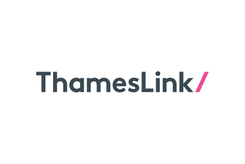 Thameslink |
|
TransPennine Express |
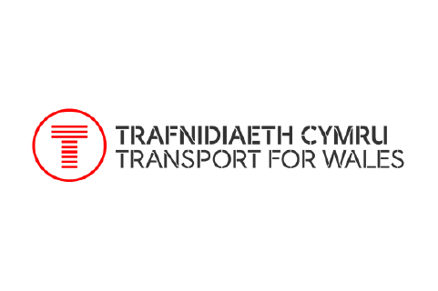 |
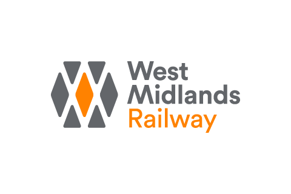 West Midlands Railway |
|
Colas Rail |
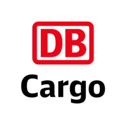 DB Cargo UK |
DCRail |
|
Direct Rail Services |
Freightliner |
GB Railfreight |
|
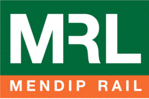 Mendip Rail |
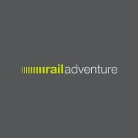 RailAdventure |
|
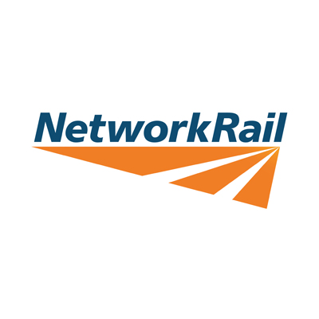 Network Rail |